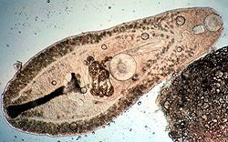

Platelmintos
El phylum Platyhelmintes incluye más de 30.000 especies de gusanos planos bilaterales, tanto de vida libre como parásitos.
Los platelmintos se pueden clasificar en cuatro grupos
Turbelarios
Comúnmente, los turbelarios representan a los platelmintos de vida libre, salvo algunas excepciones en las cuales el taxón desarrolló un estilo de vida ectosimbionte.

Especímenes de Temnocephala sp. (Vida libre).
Especímenes de Paravortex sp. (Parásito).
Monogenea
El grupo Monogenea se caracteriza, principalmente, por presentar un ciclo de vida sin reproducción asexual.
Presenta dos órganos de fijación: uno oral (prohaptor) y uno posterior (opistohaptor), siendo éste último el más importante.
Especímen de la Clase Monogenea.
Diagrama que muestra la ubicación de sus órganos fijadores.
Trematoda
El grupo Trematoda se compone de endoparásitos provistos de un órgano de fijación. Se puede clasificar en dos subgrupos.
Digenea
Especímenes de Helicometra sp.
Presenta dos órganos de fijación: una ventosa oral y una ventral.
A diferencia de Monogenea, ésta subclase presenta un ciclo de vida con alternancia de generaciones (sexual y asexual).
Aspidogastrea
Especímenes de Aspidogaster sp.
Presenta un único órgano de fijación: un disco adhesivo ventral.
Cestoda
Los céstodos son un grupo de parásitos obligados. Carecen de sistema digestivo, por lo cual deben obtener los nutrientes a través de su tegumento.
El cuerpo está organizado en tres regiones: escólex (cabeza), cuello y estróbilo (cuerpo); siendo el escólex el más importante por su participación en el anclaje.
Especímen de Taenia solium (Lombriz solitaria).
Vista cercana del éscolex con sus estructuras de fijación (ganchos y ventosas).